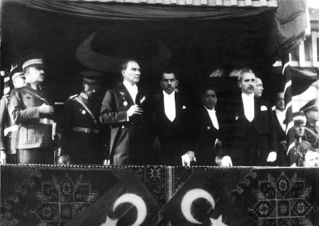
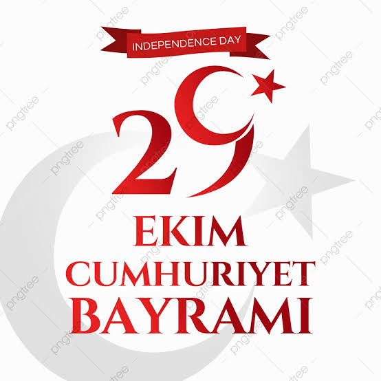
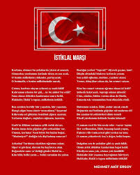

|
29 EKİM CUMHURİYET BAYRAMI Türkiye Cumhuriyeti'nin İlanı ve Anlamı |
FOTOĞRAFLARMustafa Kemal Atatürk  İlk Meclis Binası  Cumhuriyet İlanı |
|
GÖRSELLERKutlamalar  Anıtkabir Türk Bayrağı |
| 29 Ekim Cumhuriyet Bayramı Sayfası - Tüm Hakları Saklıdır. Bir Başka Açıklama |